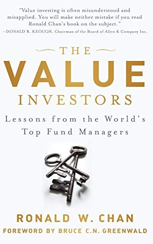

陈惠仁（Ronald W. Chan）毕业于纽约大学斯特恩商学院，取得金融与会计两个学士学位，2007年在香港创办资产管理公司Chartwell Capital。此前他访问伯克希尔·哈撒韦旗下公司的管理者，写成2010年的《Behind the Berkshire Hathaway Curtain》；第二本书则把问题从"巴菲特怎样挑选经理人"转向"价值投资为何能在不同市场存活"。他访问十二位基金经理，按美国、欧洲、亚洲三组写成《The Value Investors: Lessons from the World's Top Fund Managers》，Wiley于2012年出版第一版，ISBN为978-1-118-33929-9，哥伦比亚商学院价值投资课程教授布鲁斯·格林沃尔德（Bruce C. Greenwald）作序。中国人民大学出版社2013年出版简体中文版《世界顶尖投资权威的告白：价值投资的真谛》；2020至2021年推出的英文第二版扩至352页，增加霍华德·马克斯等人物，不应与这本十二人版本混为一谈。
四位美国受访者展现了格雷厄姆传统内部的差异。沃尔特·施洛斯（Walter Schloss）没上大学，在格雷厄姆的夜校听课后进入Graham-Newman，后来主要凭资产负债表、低市净率和分散持仓选股，极少拜访管理层；欧文·卡恩（Irving Kahn）曾任格雷厄姆助教，受访时已一百零六岁，仍在Kahn Brothers工作；其子托马斯·卡恩（Thomas Kahn）和Tweedy, Browne的威廉·布朗（William Browne）则把净资产折价扩展到生意质量与管理层判断。欧洲三章写第一鹰基金的让-马里·艾维拉德（Jean-Marie Eveillard）、西班牙Bestinver的弗朗西斯科·加西亚·帕拉梅斯（Francisco García Paramés）及英国Jupiter的安东尼·纳特（Anthony Nutt）：艾维拉德经历20世纪90年代末成长股狂热时的长期落后，仍拒绝买入自己无法估值的科技股；纳特更看重股息和资本回报率。这里没有一个可复制的统一筛选器，只有共同的起点——先控制永久损失，再讨论上涨空间。
亚洲五章让这种差异更明显。邓普顿新兴市场基金的马克·墨比尔斯（Mark Mobius）提醒陈惠仁，在治理和披露较弱的市场里不能只相信账面数字；新加坡Target Asset Management创办人邓爻联（Teng Ngiek Lian）从会计与实地调查出发；阿部修平（Shuhei Abe）在日本长期低迷的估值环境中创办SPARX；香港惠理集团两位联合创始人叶维义（V-Nee Yeh）与谢清海（Cheah Cheng Hye）各占一章，前者有法律背景，后者曾任《华尔街日报》亚洲版记者。把他们与施洛斯并排阅读，能看见市场制度如何改变尽调：美国深度价值投资者可以依赖公开报表和分散化，亚洲经理人往往必须额外核查控制股东、关联交易、资本配置和政治风险。墨比尔斯还把政治动荡视为价格可能偏离价值的来源，但这种折价只有在产权最终可执行时才有意义。书中的访谈发生在特定年份，所述职位、资产规模与业绩不能当作今天的现状。
可口可乐前总裁、Allen & Company董事长唐纳德·基奥（Donald R. Keough）在英文版推荐语中写道："Value investing is often misunderstood and misapplied. You will make neither mistake if you read Ronald Chan's book on the subject." CFA Institute书评作者布鲁斯·格兰蒂尔（Bruce Grantier）则指出，全书十二人按美国四位、欧洲三位、亚洲五位分布，这种地理跨度纠正了价值投资文献过度以美国为中心的问题。书的长处不是证明某位经理永远正确，而是展示同一个"价格低于价值"原则怎样产生不同工作流程：施洛斯回避管理层故事，艾维拉德愿为质量付费，墨比尔斯把现场调查视为报表的必要补丁。阅读时若把每章整理成"信息来源、估值方法、持仓集中度、卖出条件、治理风险"五列，逐项记录，十二篇人物访谈就会从励志故事变成一组可比较的投资制度样本。